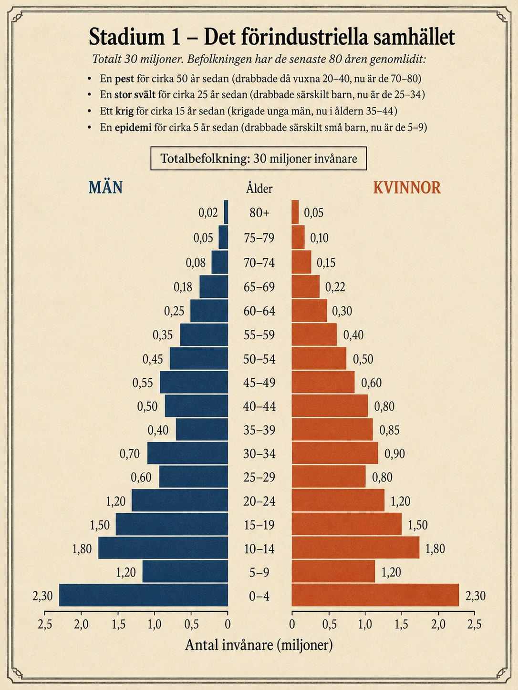
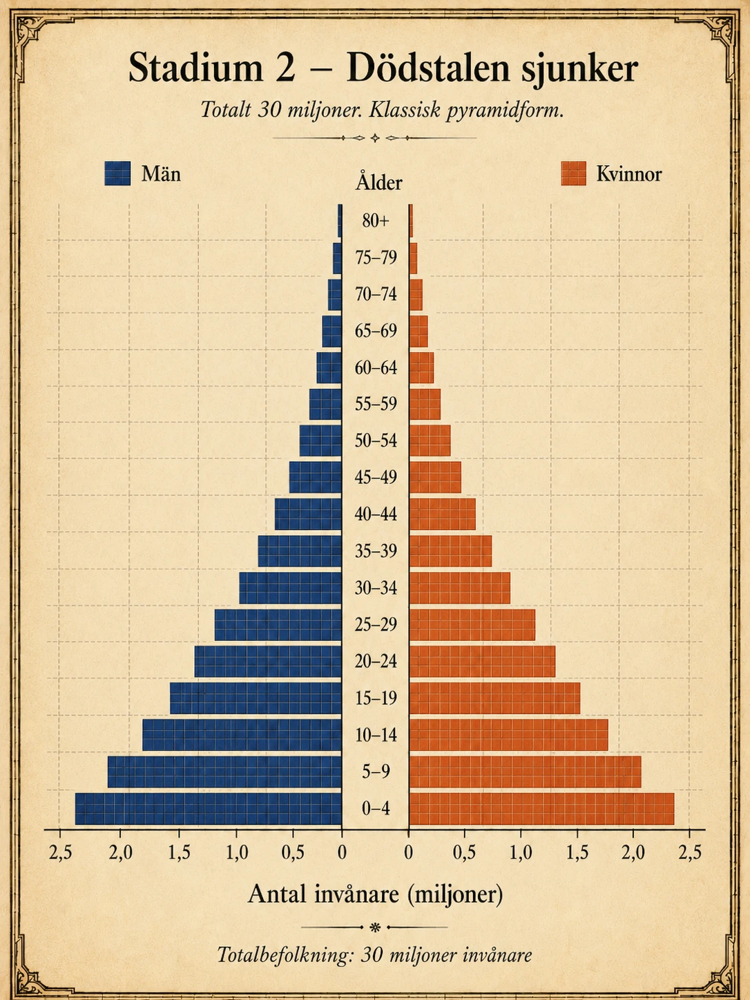
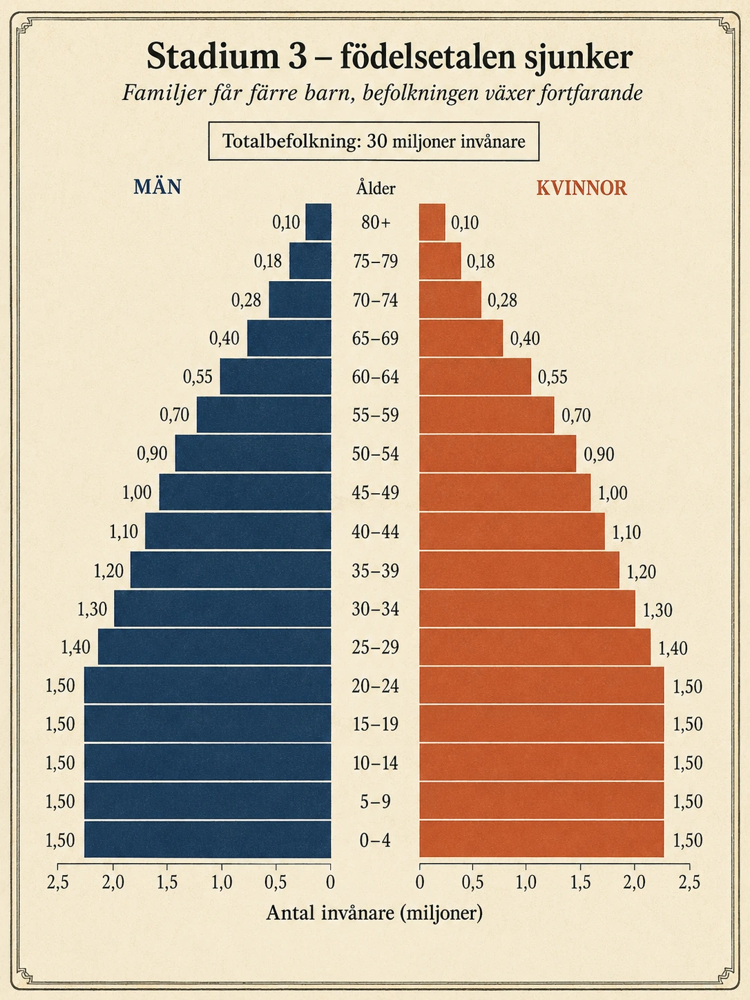
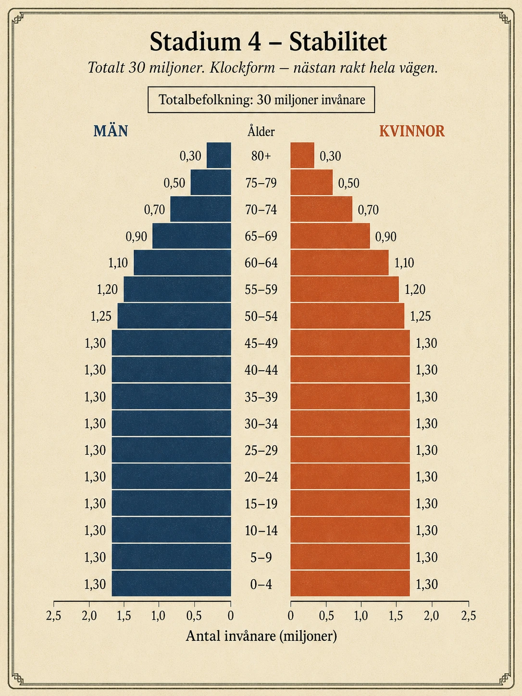
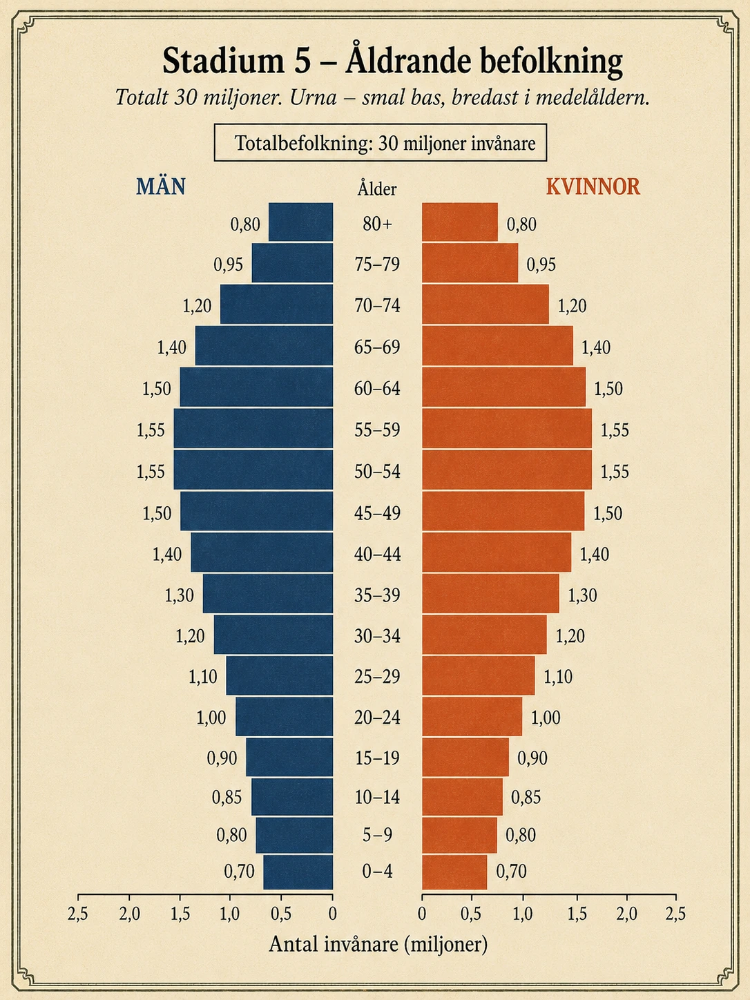

Den demografiska transitionen
— Hur befolkningsstrukturen förändras —
Den demografiska transitionen – hur befolkningen förändras när samhället utvecklas
I de två första avsnitten har vi sett att världens befolkning är ojämnt fördelad och varför människor bor där de bor. Men varför har befolkningen växt så mycket på så kort tid? Och varför har vissa länder många unga medan andra har många gamla? För att förstå det behöver vi en modell — den demografiska transitionen.
Modellen visar hur en befolkning förändras när ett samhälle går från ett enkelt jordbrukssamhälle till ett modernt industrisamhälle. Den fokuserar på tre saker som hänger ihop: hur många som föds, hur många som dör, och hur befolkningen växer eller minskar som resultat.
Modellen delar upp utvecklingen i fem stadier. Ett stadium är en fas eller ett steg i utvecklingen. Inget land följer modellen exakt — verkligheten är alltid rörig — men modellen hjälper oss att se de stora mönstren och förstå varför befolkningen i olika länder ser ut som den gör idag.
Några begrepp att kunna
Innan vi börjar med stadierna behöver vi tre nya ord. Det första är nativitet — det betyder födelsetal och visar hur många barn som föds per 1000 invånare och år. Det andra är mortalitet — det är dödstal, alltså hur många människor som dör per 1000 invånare och år. Det tredje är fertilitet — det visar hur många barn en kvinna i genomsnitt föder under sitt liv.
Vi kommer också att möta orden spädbarnsdödlighet (hur många barn som dör under sitt första levnadsår) och medellivslängd (hur länge människor i genomsnitt förväntas leva). Tillsammans ger dessa fem mått en bild av en befolknings hälsa, framtid och utveckling.
Stadium 1 – Det förindustriella samhället
I stadium 1 är både nativiteten och mortaliteten höga. Många barn föds, men många människor dör också. Befolkningen växer därför mycket långsamt — i vissa perioder växer den inte alls, eller till och med minskar.
Detta är hur de flesta samhällen på jorden såg ut före industrialiseringen. Sjukvården var outvecklad. Hygienen var dålig. Människor visste lite om hur sjukdomar smittade. Om skördarna slog fel kunde det bli missväxt — alltså att det inte fanns tillräckligt med mat — och då följde svält. Epidemier som pesten eller smittkoppor kunde svepa fram och döda en stor del av befolkningen på några år. Krig och våld var vanliga.
Varför födde då familjer många barn när så många dog tidigt? Det är värt att stanna vid. Det berodde på flera saker som hängde ihop:
- Barnen behövdes som arbetskraft i jordbruket. Ju fler händer som kunde hjälpa till med skörd, djur och hushållsarbete, desto bättre.
- Barnadödligheten var hög. Föräldrar kunde inte räkna med att alla barn skulle överleva till vuxen ålder. Många födde därför fem, sex eller fler barn för att åtminstone några skulle bli vuxna.
- Det fanns inget pensionssystem. När föräldrarna blev gamla och inte längre kunde arbeta var det barnen som förväntades ta hand om dem. Att ha få barn var att riskera ensamhet och fattigdom på äldre dagar.
Idag finns inget land kvar i stadium 1. Men under större delen av människans historia befann sig hela världen där. Det är därför viktigt att förstå — det är där vi alla började.

Stadium 2 – Dödstalen sjunker
I stadium 2 börjar något dramatiskt hända: mortaliteten sjunker. Människor börjar leva längre. Anledningarna är många och hänger ihop. Tillgången till mat blir bättre och stabilare. Vattnet blir renare. Hygienen förbättras — människor börjar tvätta händer, hantera avfall och förstå hur sjukdomar sprids. Vaccinationer börjar användas. Bostäderna blir bättre. Sjukvården, även om den fortfarande är enkel, blir tillgänglig för fler.
Resultatet blir att färre människor dör — särskilt färre barn. Spädbarnsdödligheten sjunker kraftigt. Tidigare var det vanligt att en eller flera av en familjs barn dog innan de blev vuxna. Nu överlever de flesta.
Men här kommer det avgörande: nativiteten är fortfarande hög. Familjer fortsätter att få många barn, eftersom de gamla skälen finns kvar. Traditioner ändras inte över en natt. Barn är fortfarande en ekonomisk tillgång på landsbygden. Det finns fortfarande inget pensionssystem. Och människor har inte hunnit lita på att deras barn faktiskt kommer att överleva.
Det är denna kombination som skapar befolkningsexplosionen. När många barn föds samtidigt som färre människor dör växer befolkningen snabbt — ibland mycket snabbt. Det är detta som hände i Europa under 1800-talet och som händer i många länder i Afrika och Sydasien idag.
Befolkningspyramiden i stadium 2 är den klassiska — bred i basen och jämnt avsmalnande uppåt. Många barn, många unga, färre medelålders, ännu färre gamla.

Stadium 3 – Födelsetalen sjunker
I stadium 3 börjar något hända som överraskade demografer när det skedde i Europa under 1900-talets början: även nativiteten börjar sjunka. Familjer börjar få färre barn. Befolkningen växer fortfarande, men inte lika snabbt som tidigare.
Varför börjar familjer få färre barn? Det är ingen enskild orsak — det är många saker som händer samtidigt och förstärker varandra.
Urbaniseringen är en stor faktor. När människor flyttar från landsbygden till städer förändras barnens roll i familjen. På en bondgård är ett barn en arbetskraft — det hjälper till med djur, skörd och hushållsarbete från tidig ålder. I en stadslägenhet är ett barn en kostnad. Det behöver bostad, mat, kläder, skola och omsorg, men det bidrar inte längre till familjens försörjning på samma sätt.
Utbildning spelar också en stor roll, särskilt utbildning av flickor och kvinnor. När kvinnor får möjlighet att gå i skolan, utbilda sig vidare, arbeta och försörja sig själva, förändras livet i grunden. Familjebildningen skjuts upp. Det första barnet kanske kommer först när kvinnan är 28 eller 30 istället för 18 eller 19. Och när människor börjar familjebildning senare blir det helt enkelt biologiskt svårare att få många barn.
Preventivmedel gör det möjligt att planera när och om man vill ha barn. Familjeplanering som idé sprids — det blir socialt accepterat att välja att inte ha fler barn.
Sociala skyddsnät — pensioner, sjukförsäkring, allmän sjukvård — gör att människor inte längre är lika beroende av sina barn för sin egen ålderdom. Barnen är inte längre en försäkring.
Tillsammans gör allt detta att fertiliteten sjunker, ofta från fem eller sex barn per kvinna till två eller tre. Befolkningspyramiden börjar förändras — basen är inte längre bredare än mitten. Den blir mer "rak" i nedre delen och fortsätter att smalna av jämnt mot toppen.

Stadium 4 – Stabilitet
I stadium 4 är både nativiteten och mortaliteten låga. Befolkningen växer långsamt eller är ganska stabil. Detta är vad många utvecklade industriländer såg ut under stora delar av 1900-talet.
Människor lever länge — medellivslängden ligger ofta över 75 år. Barnadödligheten är extremt låg. Få barn dör innan de blir vuxna. Sjukvården är välutbyggd, och människor kan räkna med att de flesta av deras barn kommer att överleva.
Samtidigt fortsätter familjer att få få barn, ofta runt två per familj. Barn är inte längre nödvändiga som arbetskraft eller som trygghet på äldre dagar. Människor väljer ofta att satsa på utbildning, karriär och personliga intressen innan de bildar familj. I städer är det dessutom dyrt att ha barn — bostäder är dyra, utbildning tar tid, och barnomsorgen kostar.
Befolkningspyramiden i stadium 4 ser helt annorlunda ut än de tidigare. Den är inte längre en pyramid utan en kolumn eller en klocka. Basen är inte bredare än mitten. Åldersgrupperna är ungefär lika stora från barn upp till medelålder, och avsmalningen sker först i åldrarna över 65. Det betyder att befolkningen är jämnt fördelad mellan åldrarna — något som aldrig hänt tidigare i mänsklighetens historia.

Stadium 5 – Åldrande befolkning
I stadium 5 har något oväntat hänt. Nativiteten har sjunkit så lågt att den ligger under mortaliteten. Det innebär att fler människor dör än det föds — och om inget annat händer kommer befolkningen att börja minska.
Detta är situationen i flera rika länder idag, särskilt i Östasien (Japan, Sydkorea) och Sydeuropa (Italien, Spanien, Tyskland). Människor lever mycket länge — medellivslängden kan vara över 80 år — men de föder få barn. Resultatet blir att andelen äldre i befolkningen växer kraftigt, medan andelen barn och unga krymper.
Detta är en åldrande befolkning, och det skapar nya utmaningar för samhället:
- Pensionssystem och äldreomsorg blir tyngre att finansiera. Färre människor i arbetsför ålder ska försörja fler pensionärer.
- Sjukvården belastas mer. Äldre människor behöver mer vård än yngre, och när andelen äldre växer ökar behoven.
- Arbetsmarknaden krymper. Företag kan ha svårt att hitta arbetskraft. Vissa branscher — exempelvis hantverk och äldreomsorg — kan ha akut brist på personal.
- Vissa orter avfolkas. I länder som Japan finns hela byar och småstäder där bara äldre människor finns kvar.
Hur kan ett samhälle möta detta? Det finns ett par strategier som länder försöker använda. Vissa stater försöker uppmuntra födelsetalen att stiga igen genom familjepolitik — barnbidrag, betald föräldraledighet, billig förskola, bostadsförmåner för barnfamiljer. Resultaten är ofta blygsamma. Det visar sig vara svårt att politiskt få människor att vilja ha fler barn när de väl valt ett annat livsmönster.
Invandring är det andra verktyget. När ett land tar emot människor från andra delar av världen ökar både befolkningen och andelen i arbetsför ålder. Många europeiska länder har balanserat sin krympande befolkning genom invandring under de senaste decennierna. Men det är ingen evig lösning, eftersom även invandrare åldras.

Orsakskedjan – en kort sammanfattning
Den demografiska transitionen kan sammanfattas som en kedja av orsaker och verkningar:
- Bättre mat, hygien och sjukvård leder till att färre människor dör.
- Färre dödsfall men fortsatt många födslar leder till snabb befolkningstillväxt.
- Urbanisering, utbildning, preventivmedel och social trygghet leder till att familjer börjar få färre barn.
- Färre födslar och lång medellivslängd leder till låg befolkningstillväxt eller befolkningsminskning.
- En åldrande befolkning leder till nya utmaningar för pensioner, vård, omsorg och arbetsmarknad.
Det är värt att lägga märke till att varje steg i kedjan tar tid — ofta flera decennier. Och det är inte garanterat att alla länder följer kedjan exakt. Vissa kan fastna i ett stadium. Andra kan hoppa över delar. Men huvudmönstret är slående: när samhällen utvecklas ekonomiskt och socialt, förändras deras befolkningar enligt detta mönster.
Varför modellen är viktig
Den demografiska transitionen är ett av geografins viktigaste verktyg för att förstå nutiden. Den förklarar varför världens befolkning ökade så snabbt under 1900-talet — länder runt om i världen befann sig då i stadium 2, med sjunkande dödstal och fortsatt höga födelsetal. Den förklarar varför olika länder idag har så olika åldersstruktur — Afghanistan är i en annan fas än Sverige, som är i en annan fas än Japan.
Modellen visar också något viktigt: befolkningsförändringar handlar inte bara om biologi. De hänger ihop med ekonomi, sjukvård, utbildning, jämställdhet, urbanisering, trygghetssystem och människors syn på familj och framtid. När ett samhälle förändras, förändras också dess befolkning.
I nästa avsnitt går vi vidare till en annan stor demografisk kraft som modellen inte fångar — men som påverkar varje land i världen idag: migration.
Den demografiska transitionen – hur befolkningen förändras när samhället utvecklas
I de två första avsnitten har vi sett att världens befolkning är ojämnt fördelad och varför människor bor där de bor. Men varför har befolkningen växt så snabbt? Och varför har vissa länder många unga medan andra har många gamla?
För att förstå det behöver vi en modell — en bild som förklarar mönstret. Den heter den demografiska transitionen.
Modellen visar hur en befolkning förändras när ett samhälle utvecklas. Den fokuserar på tre saker:
- hur många som föds
- hur många som dör
- hur befolkningen växer eller minskar
Modellen delar upp utvecklingen i fem stadier (faser). Inget land följer modellen exakt — verkligheten är alltid rörig — men modellen hjälper oss att se mönstret.
Tre viktiga ord
- Nativitet = födelsetal (hur många som föds per 1000 invånare och år)
- Mortalitet = dödstal (hur många som dör per 1000 invånare och år)
- Fertilitet = hur många barn en kvinna i genomsnitt föder
Vi kommer också använda orden spädbarnsdödlighet (hur många barn som dör under första året) och medellivslängd (hur länge människor lever i genomsnitt).
Stadium 1 – Det förindustriella samhället
- Både födelsetal och dödstal är höga
- Befolkningen växer mycket långsamt
- Familjer fick många barn — men många dog tidigt
- Sjukdomar, svält och krig drabbade samhället ofta
I stadium 1 är både nativiteten och mortaliteten höga. Många barn föds, men många dör också. Befolkningen växer därför långsamt — ibland minskar den till och med.
Så här såg de flesta samhällen ut före industrialiseringen:
- Sjukvården var dålig
- Hygienen var dålig
- Folk visste lite om hur sjukdomar smittade
- Om skördarna slog fel kom svält
- Epidemier som pesten dödade ibland väldigt många människor
- Krig var vanliga
Varför födde familjer många barn när så många ändå dog? Det fanns tre starka skäl:
- Barnen behövdes som arbetskraft på gården
- Föräldrar visste att inte alla barn skulle överleva — så man födde fler
- Det fanns inga pensioner — när man blev gammal var det barnen som tog hand om en
Idag finns inget land i stadium 1. Men under nästan hela mänsklighetens historia befann sig hela världen där.
Pyramiden visar ett samhälle i stadium 1. Lägg märke till:
- Basen är bred — det föds många barn
- Pyramiden är ojämn — den har "tänder" och inbuktningar
- Varje tand visar en historisk händelse: en pest, en svält, ett krig eller en epidemi
- Få människor blir gamla — toppen är väldigt smal
- I åldrarna 35–44 finns färre män än kvinnor — det är krigets spår
Fundera: Hur skulle pyramiden för Sverige under medeltiden ha sett ut?
Stadium 2 – Dödstalen sjunker
- Dödstalen sjunker — människor lever längre
- Födelsetalen är fortfarande höga — gamla vanor finns kvar
- Resultat: befolkningen växer mycket snabbt (befolkningsexplosion)
- Pyramiden får klassisk form: bred bas, jämn avsmalning uppåt
I stadium 2 händer något stort: mortaliteten sjunker. Det blir mindre dödligt att leva. Anledningarna är flera:
- Bättre och stabilare mat
- Renare vatten
- Bättre hygien — folk tvättar händer, hanterar avfall bättre
- Vaccinationer
- Bättre bostäder
- Enklare men tillgänglig sjukvård
Resultatet: färre människor dör — särskilt färre barn. Spädbarnsdödligheten sjunker mycket.
Men nativiteten är fortfarande hög. Familjer fortsätter att få många barn, eftersom:
- Traditioner ändras inte över en natt
- Barn är fortfarande värdefulla på landsbygden
- Det finns ännu inga pensioner
- Människor litar inte ännu helt på att deras barn kommer överleva
Tänk så här: när många barn föds samtidigt som färre dör — då växer befolkningen snabbt. Det är detta som hände i Europa på 1800-talet. Och det händer i många länder i Afrika och Sydasien idag.
Pyramiden visar ett samhälle i stadium 2. Lägg märke till:
- Basen är bred — det föds fortfarande många barn
- Avsmalningen är jämn uppåt — färre dör tidigt nu
- Det finns nu fler människor i äldre åldrar än i stadium 1
- Pyramiden är en klassisk pyramid — den ser ut precis så som man tänker sig en befolkningspyramid
Fundera: Vilka tre saker har förändrats jämfört med stadium 1?
Stadium 3 – Födelsetalen sjunker
- Nu sjunker även födelsetalen — familjer får färre barn
- Befolkningen växer fortfarande, men långsammare
- Tre stora orsaker: urbanisering, utbildning och preventivmedel
- Pyramiden får rak nederdel — barnen är inte fler än de unga vuxna
I stadium 3 börjar även nativiteten sjunka. Familjer börjar få färre barn. Befolkningen växer fortfarande, men inte lika snabbt.
Varför börjar folk skaffa färre barn? Det är många saker som händer samtidigt.
Urbaniseringen är en stor faktor. När folk flyttar från landsbygden till städer ändras barnens roll:
- På en bondgård är ett barn en arbetskraft — det hjälper till med djur, skörd och hushåll
- I en stadslägenhet är ett barn en kostnad — bostad, mat, kläder, skola
- I staden bidrar barnet inte längre till familjens försörjning
Utbildning spelar också stor roll, särskilt utbildning av flickor och kvinnor. När kvinnor:
- får gå i skolan
- får utbilda sig vidare
- får arbeta och tjäna egna pengar
...så förändras livet. Många väntar med att skaffa barn till de är äldre. Då blir det biologiskt svårare att få många barn.
Preventivmedel gör det möjligt att planera när och om man vill ha barn.
Sociala skyddsnät — pensioner, sjukförsäkring, allmän sjukvård — gör att människor inte är lika beroende av sina barn.
Tillsammans gör allt detta att fertiliteten sjunker, ofta från fem-sex barn per kvinna till två-tre.
Pyramiden visar ett samhälle i stadium 3. Lägg märke till:
- De nedersta åldersgrupperna är lika breda — basen är "rak"
- Det föds inte längre fler barn än det finns unga vuxna
- Avsmalningen börjar i medelåldern, inte i botten
- Pyramiden ser ut som en pyramid där den nedre delen är "kapad rak"
Fundera: Vilken förändring tror du har störst betydelse — urbaniseringen, utbildningen eller preventivmedlen?
Stadium 4 – Stabilitet
- Både födelsetal och dödstal är låga
- Människor lever länge — medellivslängd över 75 år
- Familjer har ofta bara 1–2 barn
- Pyramiden blir en klocka eller kolumn, inte en pyramid
I stadium 4 är både nativiteten och mortaliteten låga. Befolkningen växer långsamt eller är stabil. Detta är vad många utvecklade industriländer såg ut som under 1900-talet.
Människor lever länge:
- Medellivslängden ligger ofta över 75 år
- Barnadödligheten är extremt låg
- Sjukvården är välutbyggd
Samtidigt får familjer få barn, ofta bara 1–2 per familj. Det beror på:
- Barn behövs inte som arbetskraft
- Barn behövs inte som trygghet på äldre dagar — pensioner och sjukvård finns
- Människor satsar på utbildning och karriär först
- Det är dyrt att ha barn i städer (bostad, dagis, skola)
Pyramiden i stadium 4 ser helt annorlunda ut. Det är inte längre en pyramid — det är en kolumn eller klocka. Åldersgrupperna är ungefär lika stora från barn upp till 60-årsåldern.
Pyramiden visar ett samhälle i stadium 4. Lägg märke till:
- Basen är INTE bredare än mitten — den är ungefär lika bred
- Åldersgrupperna är nästan lika stora från 0–4 år upp till 60–64
- Avsmalningen börjar först vid 65+
- Det är inte längre en pyramid — det är en klocka
Fundera: Vad händer med en befolkning där varje åldersgrupp är ungefär lika stor?
Stadium 5 – Åldrande befolkning
- Nu föds färre människor än det dör
- Om inget händer börjar befolkningen minska
- Andelen äldre växer kraftigt — andelen barn minskar
- Två lösningar: familjepolitik och invandring
I stadium 5 har något oväntat hänt. Nativiteten har sjunkit så lågt att den är lägre än mortaliteten. Det betyder att fler människor dör än det föds.
Om inget annat händer kommer befolkningen att börja minska.
Detta är situationen i flera rika länder idag:
- Östasien: Japan, Sydkorea
- Sydeuropa: Italien, Spanien, Tyskland
Människor lever mycket länge — ofta över 80 år. Men de föder få barn. Resultatet blir en åldrande befolkning: många äldre, få barn.
Det skapar nya problem:
- Pensionerna blir svårare att betala — färre arbetande ska försörja fler pensionärer
- Sjukvården belastas mer — äldre behöver mer vård
- Arbetsmarknaden krymper — företag har svårt att hitta personal
- Vissa orter avfolkas — i Japan finns hela byar där bara äldre bor kvar
Hur kan ett land lösa det? Det finns två huvudstrategier:
- Familjepolitik — staten försöker uppmuntra födelsetalen genom barnbidrag, betald föräldraledighet, billig förskola, bostadsförmåner. Resultaten är ofta blygsamma.
- Invandring — när människor flyttar in från andra länder ökar både befolkningen och andelen i arbetsför ålder. Många europeiska länder har balanserat sig med invandring de senaste decennierna.
Pyramiden visar ett samhälle i stadium 5. Lägg märke till:
- Basen är SMAL — det föds få barn
- Mitten är bredast — många människor i åldrarna 50–60
- Det finns många i åldrarna 70+ och 80+
- Pyramiden ser ut som en urna eller är uppochnedvänd jämfört med stadium 1
Fundera: Vilka stora skillnader ser du mellan pyramiden för stadium 1 och stadium 5?
Orsakskedjan – en kort sammanfattning
Den demografiska transitionen är en kedja av orsaker och verkningar som tar generationer att gå igenom.
- Bättre mat, hygien och sjukvård ➜ färre människor dör
- Färre dödsfall + fortsatt många födslar ➜ snabb befolkningstillväxt
- Urbanisering, utbildning, preventivmedel, social trygghet ➜ familjer får färre barn
- Färre födslar + lång medellivslängd ➜ låg tillväxt eller minskning
- En åldrande befolkning ➜ nya utmaningar för samhället
Varje steg tar tid — ofta flera decennier. Inte alla länder följer kedjan exakt. Men huvudmönstret är slående.
Varför är modellen viktig?
Den demografiska transitionen hjälper oss förstå mycket:
- Varför världens befolkning ökade så snabbt under 1900-talet (många länder var i stadium 2)
- Varför länder har så olika åldersstruktur idag (Afghanistan vs Sverige vs Japan)
- Vad som händer med ett samhälle när det utvecklas ekonomiskt och socialt
Modellen visar också en viktig sak: befolkningsförändringar handlar inte bara om biologi. De hänger ihop med ekonomi, sjukvård, utbildning, jämställdhet, urbanisering, sociala trygghetssystem och människors syn på familj och framtid.
I nästa avsnitt går vi vidare till en annan stor demografisk kraft: migration.
1. Hur modellen upptäcktes
Den demografiska transitionen är inte något som alltid varit känt. Modellen är förvånansvärt ny, och den uppstod faktiskt som en gåta — något demografer försökte förklara i efterhand.
Under sent 1800-tal och tidigt 1900-tal började europeiska befolkningsstatistiker märka att något konstigt hände. Sedan tusentals år tillbaka hade föräldrar fått många barn och förlorat många. Det var lika naturligt som vädret. Plötsligt — vid olika tidpunkter i olika länder — började människor få färre barn. Och inte bara lite färre. Genomsnittsantalet barn per kvinna sjönk från fem-sex till två-tre på bara några decennier. Detta hade aldrig hänt tidigare i mänsklighetens historia.
De första som beskrev mönstret systematiskt var amerikanen Warren Thompson 1929 och fransmannen Adolphe Landry under 1930-talet. På 1940-talet utvecklade demografen Frank Notestein modellen i sin moderna form. De såg att västländerna hade gått igenom samma fyra stadier, om än vid olika tidpunkter. England var tidigt ute, Tyskland följde efter, södra Europa senare. Mönstret var slående likt.
Det femte stadiet — den åldrande, krympande befolkningen — fanns inte i den ursprungliga modellen. Notestein och hans samtida kunde inte föreställa sig att födelsetalen skulle sjunka under dödstalen. Att människor frivilligt skulle välja att inte få barn alls var något helt nytt. Det femte stadiet är något som lagts till av senare demografer, först på riktigt under 1980-talet när Japan började visa tendensen och sedan blev tydligt under 1990- och 2000-talet i många europeiska länder.
Det är värt att tänka på: modellen vi använder i geografin idag är en beskrivning av något som hänt — den förutsåg inte att stadium 5 skulle uppstå. Det är fortfarande oklart om det kommer att finnas ett stadium 6 — och vad det i så fall skulle innebära.
2. Undantagen — länder som inte följer modellen
Demografiska transitionsmodellen är användbar, men ingen modell beskriver verkligheten perfekt. Det finns några viktiga undantag och avvikelser från huvudmönstret som är värda att fundera på.
Snabbare transitioner. I Europa tog hela transitionen — från stadium 1 till stadium 4 — ungefär 150–200 år. För länder som industrialiserats senare har det gått mycket snabbare. Sydkorea gick från ett fattigt jordbruksland med hög fertilitet till ett välutvecklat industriland med extremt låg fertilitet på bara 40 år. Kina har gått igenom hela transitionen från slutet av 1970-talet och framåt, delvis tvingad av landets ettbarnspolitik. När transitionen sker så snabbt blir konsekvenserna också mer dramatiska — Kina står idag inför en åldrande befolkning innan landet ens hunnit bli rikt.
Bromsade transitioner. Vissa länder fastnar mellan stadium 2 och 3. Födelsetalen sjunker långsamt eller inte alls trots att samhället förändras. Niger, Mali och flera andra länder i Sahelregionen är exempel. Här är fertiliteten fortfarande omkring sex barn per kvinna trots att mortaliteten har sjunkit avsevärt. Orsakerna är komplexa — religiösa och kulturella traditioner, låg utbildningsnivå för flickor, brist på preventivmedel, men också ekonomiska faktorer som gör att barn fortfarande ses som ekonomisk tillgång på landsbygden.
HIV-epidemin i södra Afrika från 1990-talet och framåt skapade en helt unik demografisk situation. I länder som Botswana, Zimbabwe och Sydafrika dog så många unga vuxna att medellivslängden tillfälligt sjönk dramatiskt — i Botswana från 65 år till 49 år. Det är ett av få exempel i modern tid på att mortaliteten ökat igen i ett land som tidigare gått mot stadium 3. Befolkningspyramiderna fick mycket karakteristiska "midjor" — alltså inbuktningar — i åldrarna 20–45 år, där HIV-relaterad dödlighet var som värst.
Krig och politiska katastrofer kan också skapa avvikelser. Kambodja under röda khmererna 1975–79 förlorade kanske en fjärdedel av sin befolkning. Befolkningspyramiden för Kambodja idag bär fortfarande spår av detta i form av en saknad generation. Sovjetunionens fall orsakade en kortvarig "mortalitetskris" i Ryssland under 1990-talet, där medellivslängden för män sjönk till bara 58 år.
Modellen är alltså en karta, inte ett recept. Den hjälper oss förstå mönstret, men varje land har sin egen demografiska historia.
3. Varför sjunker fertiliteten egentligen?
Standardtexten ger flera förklaringar till varför födelsetalen sjunker i stadium 3 — urbanisering, utbildning, preventivmedel, social trygghet. Men det är värt att gräva djupare i frågan, eftersom svaret är mer omdebatterat än det kan verka.
Demografer är överens om mönstret — fertiliteten sjunker vid en viss utvecklingsnivå. Men de är inte överens om exakt vilken faktor som driver förändringen.
Den ekonomiska teorin säger att barn är en investering med kostnader och fördelar. När barn blir dyrare (i städer, med skolgång) och deras ekonomiska bidrag till familjen minskar, väljer rationella föräldrar att få färre. Ekonomen Gary Becker beskrev detta som en övergång från "kvantitet" till "kvalitet" — istället för att få många barn satsar föräldrar på att ge färre barn en bra utbildning och starta i livet.
Den kulturella teorin säger att fertilitetsnedgången främst handlar om värderingar. När individualism, kvinnors självständighet och nya ideal om livet sprids, förändras synen på familj och barn. Det är inte i första hand ekonomi som driver — det är förändrade värderingar. Anhängare av denna teori pekar på att fertilitetsnedgången spreds geografiskt på sätt som inte alltid matchar ekonomisk utveckling — den kunde gå snabbare i ett område än i ett annat trots liknande välstånd.
Den biologisk-tekniska teorin lyfter fram att preventivmedel och säker abort gjorde det möjligt att verkligen välja familjestorlek. Innan dessa fanns var det svårt att begränsa barnafödandet effektivt, även om man ville. När pillret kom på 1960-talet och spreds globalt under 1970- och 80-talet möjliggjorde det den fertilitetsnedgång vi sett.
Den feministiska tolkningen lyfter särskilt fram kvinnors utbildning och möjligheter. När kvinnor får utbildning, jobb, ekonomisk självständighet och möjlighet att skjuta upp eller välja bort moderskap, sjunker fertiliteten. Det är inte slumpmässigt att de länder där fertiliteten är lägst också är de länder där kvinnors möjligheter är mest utvecklade — ofta över ett socialt minimum.
Sanningen är förmodligen att alla dessa förklaringar är delvis rätt. De fungerar tillsammans, förstärker varandra, och i olika länder dominerar olika faktorer. Men det är en levande forskningsfråga, och inte ett färdigt svar.
4. Vad kommer efter stadium 5?
En av de mest fascinerande frågorna i modern demografi är vad som händer efter stadium 5. Den ursprungliga modellen slutade vid stadium 4, men stadium 5 har lagts till för att beskriva åldrande, krympande befolkningar. Finns det ett stadium 6?
Det är fortfarande för tidigt att veta. Men det finns olika scenarier som demografer diskuterar.
Scenario A — fortsatt minskning. I detta scenario fortsätter befolkningen att krympa i de länder som är i stadium 5. Japan kan ha 60 miljoner invånare år 2100 istället för 120 miljoner. Sydkorea, om inget förändras, halveras inom ett halvt sekel. Många europeiska länder följer efter. Det skulle vara den största frivilliga befolkningsminskningen i mänsklighetens historia.
Scenario B — en lätt uppgång. Vissa länder ser tecken på en mild fertilitetsuppgång efter att ha legat extremt lågt under en period. Sverige, Frankrike och USA har haft perioder där fertiliteten gått från 1,5 upp till 1,8–1,9 barn per kvinna. Om den utvecklingen fortsätter i fler länder skulle vi få ett scenario där fertiliteten stabiliseras på en låg men inte alarmerande nivå, runt 1,7–1,9 barn.
Scenario C — massiv invandringsdriven förändring. Om Europa och Östasien tar emot stora antal invandrare från Afrika och Sydasien — där befolkningen fortfarande växer — kan deras befolkningar fortsätta vara stora, men med kraftigt förändrad sammansättning. Det blir då en helt annan demografisk situation än "stadium 5" — snarare något nytt.
Scenario D — teknologisk förändring. Vissa forskare spekulerar att artificiell intelligens, automatisering eller ny medicinsk teknologi kan förändra demografin på sätt vi inte kan föreställa oss idag. Vad händer om medellivslängden börjar närma sig 100 år? Om fertilitetsbehandlingar görs så billiga och tillgängliga att människor som vill ha barn senare i livet kan göra det? Det finns långtidsperspektiv där demografin förändras på sätt som ligger utanför den klassiska modellen.
Vad det än blir, är vi på okänd mark. Den demografiska transitionsmodellen som ritades på 1940-talet förutsåg inte stadium 5. Vi har ingen garanti för att vi kan förutse stadium 6 eller 7 eller vad som kommer efter. Det vi kan veta är att demografin är en av samhällets mest grundläggande krafter — och förändringar i den kommer att forma 2000-talets historia.
I nästa avsnitt går vi vidare till en demografisk kraft som blir allt viktigare i en värld där olika länder befinner sig i olika stadier: migration.
Vill du veta mer?
Laddar flipcards …
Laddar frågor ...
Demografi-piloten. Mer innehåll kommer.